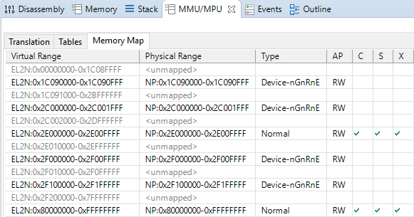
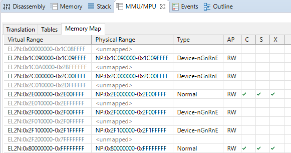
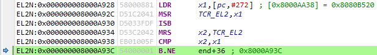

| Source: | https://ashw.io/blog/arm64-pgtable-tool |
|---|
Hi there, I’m back with a new blog post! It’s been far longer than I intended to get something out the door as I’ve had a bit of a crazy year. But now, with the global COVID-19 situation ongoing as I write this, I’m finding I have a lot more time and energy to devote to writing Arm based tutorials and examples.
In this post I’ll be introducing my new tool for automatically generating MMU and translation table setup code, whether for learning purposes or to use in your own bare metal projects. The tool is hosted as an open source project on GitHub and is freely available for you to download and use today. Enjoy!
In part #1 of my bare metal arm64 hypervisor tutorial, I explained that each time an application accesses a memory location, that access is made to a virtual address that is automatically translated to a physical address by the CPU’s memory management unit (MMU) using tables programmed by the kernel; these tables are also used to specify properties and attributes such as access permissions and whether the processor can execute from the region.
Note that in some textbooks and projects such as the Linux kernel these are the “page tables”, while in other sources such as the 64-bit Arm architecture they are the “translation tables”; both terms are referring to the same thing and are often used interchangeably.
Programming the MMU and its translation tables is a very important step during the boot process; without this the processor defaults to having most of its built-in memory access optimizations switched off, including the caches, write merging, access reordering, and more. With this in mind, the processor is running much slower up until the MMU is enabled as it will often be stalled waiting for the results of memory reads and writes.
Unfortunately it can be quite difficult getting started with programming the MMU and its translation tables if you’re not already familiar with them. Indeed, programming errors in this area are one of the most common mistakes made by newcomers to the Arm architecture trying to write their own bootstrap or CPU validation code.
In releasing this blog post alongside the arm64-pgtable-tool, I’m hoping to show you that the MMU and its translation tables are not actually as scary as they may seem; not only will the tool automatically generate the MMU and translation table setup code for you to freely drag and drop into your own bare metal projects, but the generated assembly is clearly labelled and commented to assist you in your learning.
I recommend watching my video on Virtual Address Formats if you haven’t already, as it covers the fundamentals of:
how the MMU translates a virtual address into a physical address;
the maths behind lower level tables dividing memory into coarse blocks while next level tables subdivide them into finer grain blocks;
the fact that a smaller virtual address space allows us to skip the earlier levels of translation, resulting in fewer total levels of lookup.
Most of the magic happens in the Table.map() function, which generates the abstract translation table hierarchy that is later converted into assembly setup code. I’m not going to go into the details in this blog post, but the basic premise is to maximise the number of complete blocks that are used to map the region in the current table. If there is a leading incomplete block (“underflow”) and/or a trailing incomplete block (“overflow”), these are dispatched to the corresponding next-level table and the process repeats.
The tool is written in Python 3 and is hosted as an open source project on GitHub. This blog corresponds to the v1.0 release.
The tool requires:
Python 3.8+
At time of writing the following command-line options are available:
-i SRC input memory map file
-o DST output GNU assembly file
-ttb TTB desired translation table base address
-el exception level (default: 2)
-tg translation granule (default: 4K)
-tsz address space size (default: 32)The input memory map file is a simple comma-separated text file with format <ADDRESS, LENGTH, TYPE, LABEL>, where:
ADDRESS is the hexadecimal base address of the region;
LENGTH is the length of the region in bytes, using K, M, or G to specify the unit;
TYPE is either DEVICE for Device-nGnRnE or NORMAL for Normal Inner/Outer Write-Back RAWA Inner Shareable
LABEL is a human-friendly label describing what is being mapped.
Here is an example memory map file for the Armv8-A Foundation Model FVP denoting one of its UART serial ports, its GICv3 interrupt controller, some on-SoC SRAM, and some off-SoC DRAM. This memory map file is actually provided with the tool here, alongside some other more complete examples too.
0x01C090000, 4K, DEVICE, UART0
0x02C000000, 8K, DEVICE, GICC
0x02E000000, 64K, NORMAL, Non-Trusted SRAM
0x02F000000, 64K, DEVICE, GICv3 GICD
0x02F100000, 1M, DEVICE, GICv3 GICR
0x080000000, 2G, NORMAL, Non-Trusted DRAMTurning this memory map file into the corresponding MMU and translation table setup code is as simple as running:
$ python3.8 generate.py -i examples/base-fvp-minimal.txt -o fvp.S -ttb 0x90000000 -el 2 -tg 4K -tsz 32Note that the provided translation table base address, 0x90000000, must be the base address of a granule aligned buffer that is at least large enough to contain the number of translation tables allocated by the tool. You can see this in the generated assembly file:
/*
* ...
*
* This memory map requires a total of 7 translation tables.
* Each table occupies 4K of memory (0x1000 bytes).
* The buffer pointed to by 0x90000000 must therefore be 7x 4K = 0x7000 bytes long.
* It is the programmer's responsibility to guarantee this.
*
* ...
*/To test the tool I took part #1 of my bare metal arm64 hypervisor code, dragged and dropped the generated fvp.S file into the project’s source folder, and added a call to mmu_on() just before the branch to main() in entry2.S:
globalfunc entry2
ADRP x0, dummy_vectors
MSR VBAR_EL2, x0
ADRP x0, _stack_start
MOV sp, x0
BL mmu_on
BL main
B .
endfunc entry2Running the code pops up the Hello, world! message on the Telnet console as before, but this time we can interrupt the CPU and utilise DS-5’s MMU/MPU view to inspect the translation tables and resulting memory map:
As you can see, the memory map exactly matches that described by the example memory map file shown earlier.
As an aside, note how the Device-nGnRnE regions are not cached, are not shared, and are also not executable. Those first two are implicit but the last is set manually, and it is important to do so as it prevents the CPU from performing speculative instruction fetches from those areas; you wouldn’t want the CPU to perform a speculative instruction fetch of your interrupt controller’s acknowledge register, advancing its internal state machine but losing the returned ID of the pending interrupt! In the Armv8-A architecture you must always explicitly mark Device regions as Execute Never (XN).
Moving on, we can run the tool again but this time specifying a 64K granule:
$ python3.8 generate.py -i examples/base-fvp-minimal.txt -o fvp.S -ttb 0x90000000 -el 2 -tg 64K -tsz 32Dragging and dropping this into the arm64-hypervisor-tutorial source code, rebuilding the project, and running it on the FVP gives:
Note how the UART0 and GICC regions, which are at 0x1C090000 and 0x2C000000 respectively, have both had their lengths rounded up to 64K. This is because 64K is the smallest granule of memory that we can map when using a 64K translation granule. When given a region address that is not granule aligned, the tool rounds the base address of the region down to the nearest granule boundary and extends the provided length accordingly. Regardless of whether the base address was adjusted, if the resulting region length is less than one granule then it will be rounded up to span one granule.
Unfortunately, I can’t demonstrate a 16K granule because the Armv8-A Foundation Platform FVP does not support it. To help save you time debugging, the tool will spin forever at the code below if the translation control register does not read back the value written. I’m planning to add more robust checks where the generated code queries the CPU’s ID registers to determine which features are available, but this is a quick-and-dirty check that works on the FVP:
LDR x1, =0x8080b520 // program tcr on this CPU
MSR tcr_el2, x1
ISB
MRS x2, tcr_el2 // verify CPU supports desired config
CMP x2, x1
B.NE .Running this on the FVP gets stuck as expected:
To conclude this blog post I’ll copy-paste the fvp.S file generated using the base-fvp-minimal.txt example memory map file provided with the project. I hope you’ve found this interesting and that you find the tool useful. Please have a play around with it, and feel free to discuss and provide feedback in the comments below!
/*
* This file was automatically generated using arm64-pgtable-tool.
* See: https://github.com/ashwio/arm64-pgtable-tool
*
* THE SOFTWARE IS PROVIDED "AS IS", WITHOUT WARRANTY OF ANY KIND, EXPRESS OR
* IMPLIED, INCLUDING BUT NOT LIMITED TO THE WARRANTIES OF MERCHANTABILITY,
* FITNESS FOR A PARTICULAR PURPOSE AND NONINFRINGEMENT. IN NO EVENT SHALL THE
* AUTHORS OR COPYRIGHT HOLDERS BE LIABLE FOR ANY CLAIM, DAMAGES OR OTHER
* LIABILITY, WHETHER IN AN ACTION OF CONTRACT, TORT OR OTHERWISE, ARISING FROM,
* OUT OF OR IN CONNECTION WITH THE SOFTWARE OR THE USE OR OTHER DEALINGS IN THE
* SOFTWARE.
*
* This code programs the following translation table structure:
*
* level 2 table @ 0x90000000
* [# 0]---------------------------\
* level 3 table @ 0x90010000
* [#7177] 0x00001c090000-0x00001c09ffff, Device, UART0
* [# 1]---------------------------\
* level 3 table @ 0x90020000
* [#3072] 0x00002c000000-0x00002c00ffff, Device, GICC
* [#3584] 0x00002e000000-0x00002e00ffff, Normal, Non-Trusted SRAM
* [#3840] 0x00002f000000-0x00002f00ffff, Device, GICv3 GICD
* [#3856] 0x00002f100000-0x00002f10ffff, Device, GICv3 GICR
* [#3857] 0x00002f110000-0x00002f11ffff, Device, GICv3 GICR
* [#3858] 0x00002f120000-0x00002f12ffff, Device, GICv3 GICR
* [#3859] 0x00002f130000-0x00002f13ffff, Device, GICv3 GICR
* [#3860] 0x00002f140000-0x00002f14ffff, Device, GICv3 GICR
* [#3861] 0x00002f150000-0x00002f15ffff, Device, GICv3 GICR
* [#3862] 0x00002f160000-0x00002f16ffff, Device, GICv3 GICR
* [#3863] 0x00002f170000-0x00002f17ffff, Device, GICv3 GICR
* [#3864] 0x00002f180000-0x00002f18ffff, Device, GICv3 GICR
* [#3865] 0x00002f190000-0x00002f19ffff, Device, GICv3 GICR
* [#3866] 0x00002f1a0000-0x00002f1affff, Device, GICv3 GICR
* [#3867] 0x00002f1b0000-0x00002f1bffff, Device, GICv3 GICR
* [#3868] 0x00002f1c0000-0x00002f1cffff, Device, GICv3 GICR
* [#3869] 0x00002f1d0000-0x00002f1dffff, Device, GICv3 GICR
* [#3870] 0x00002f1e0000-0x00002f1effff, Device, GICv3 GICR
* [#3871] 0x00002f1f0000-0x00002f1fffff, Device, GICv3 GICR
* [# 4] 0x000080000000-0x00009fffffff, Normal, Non-Trusted DRAM
* [# 5] 0x0000a0000000-0x0000bfffffff, Normal, Non-Trusted DRAM
* [# 6] 0x0000c0000000-0x0000dfffffff, Normal, Non-Trusted DRAM
* [# 7] 0x0000e0000000-0x0000ffffffff, Normal, Non-Trusted DRAM
*
* The following command line arguments were passed to arm64-pgtable-tool:
*
* -i .\examples\base-fvp-minimal.txt
* -ttb 0x90000000
* -el 2
* -tg 64K
* -tsz 32
*
* This memory map requires a total of 3 translation tables.
* Each table occupies 64K of memory (0x10000 bytes).
* The buffer pointed to by 0x90000000 must therefore be 3x 64K = 0x30000 bytes long.
* It is the programmer's responsibility to guarantee this.
*
* The programmer must also ensure that the virtual memory region containing the
* translation tables is itself marked as NORMAL in the memory map file.
*/
.section .data.mmu
.balign 2
mmu_lock: .4byte 0 // lock to ensure only 1 CPU runs init
#define LOCKED 1
mmu_init: .4byte 0 // whether init has been run
#define INITIALISED 1
.section .text.mmu_on
.balign 2
.global mmu_on
.type mmu_on, @function
mmu_on:
ADRP x0, mmu_lock // get 4KB page containing mmu_lock
ADD x0, x0, :lo12:mmu_lock // restore low 12 bits lost by ADRP
MOV w1, #LOCKED
SEVL // first pass won't sleep
1:
WFE // sleep on retry
LDAXR w2, [x0] // read mmu_lock
CBNZ w2, 1b // not available, go back to sleep
STXR w3, w1, [x0] // try to acquire mmu_lock
CBNZ w3, 1b // failed, go back to sleep
check_already_initialised:
ADRP x1, mmu_init // get 4KB page containing mmu_init
ADD x1, x1, :lo12:mmu_init // restore low 12 bits lost by ADRP
LDR w2, [x1] // read mmu_init
CBNZ w2, end // init already done, skip to the end
zero_out_tables:
LDR x2, =0x90000000 // address of first table
LDR x3, =0x30000 // combined length of all tables
LSR x3, x3, #5 // number of required STP instructions
FMOV d0, xzr // clear q0
1:
STP q0, q0, [x2], #32 // zero out 4 table entries at a time
SUBS x3, x3, #1
B.NE 1b
load_descriptor_templates:
LDR x2, =0x40000000000705 // Device block
LDR x3, =0x40000000000707 // Device page
LDR x4, =0x701 // Normal block
LDR x5, =0x703 // Normal page
program_table_0:
LDR x8, =0x90000000 // base address of this table
LDR x9, =0x20000000 // chunk size
program_table_0_entry_0:
LDR x10, =0 // idx
LDR x11, =0x90010000 // next-level table address
ORR x11, x11, #0x3 // next-level table descriptor
STR x11, [x8, x10, lsl #3] // write entry into table
program_table_0_entry_1:
LDR x10, =1 // idx
LDR x11, =0x90020000 // next-level table address
ORR x11, x11, #0x3 // next-level table descriptor
STR x11, [x8, x10, lsl #3] // write entry into table
program_table_0_entry_4_to_7:
LDR x10, =4 // idx
LDR x11, =4 // number of contiguous entries
LDR x12, =0x80000000 // output address of entry[idx]
1:
ORR x12, x12, x4 // merge output address with template
STR X12, [x8, x10, lsl #3] // write entry into table
ADD x10, x10, #1 // prepare for next entry idx+1
ADD x12, x12, x9 // add chunk to address
SUBS x11, x11, #1 // loop as required
B.NE 1b
program_table_1:
LDR x8, =0x90010000 // base address of this table
LDR x9, =0x10000 // chunk size
program_table_1_entry_7177:
LDR x10, =7177 // idx
LDR x11, =1 // number of contiguous entries
LDR x12, =0x1c090000 // output address of entry[idx]
1:
ORR x12, x12, x3 // merge output address with template
STR X12, [x8, x10, lsl #3] // write entry into table
ADD x10, x10, #1 // prepare for next entry idx+1
ADD x12, x12, x9 // add chunk to address
SUBS x11, x11, #1 // loop as required
B.NE 1b
program_table_2:
LDR x8, =0x90020000 // base address of this table
LDR x9, =0x10000 // chunk size
program_table_2_entry_3072:
LDR x10, =3072 // idx
LDR x11, =1 // number of contiguous entries
LDR x12, =0x2c000000 // output address of entry[idx]
1:
ORR x12, x12, x3 // merge output address with template
STR X12, [x8, x10, lsl #3] // write entry into table
ADD x10, x10, #1 // prepare for next entry idx+1
ADD x12, x12, x9 // add chunk to address
SUBS x11, x11, #1 // loop as required
B.NE 1b
program_table_2_entry_3584:
LDR x10, =3584 // idx
LDR x11, =1 // number of contiguous entries
LDR x12, =0x2e000000 // output address of entry[idx]
1:
ORR x12, x12, x5 // merge output address with template
STR X12, [x8, x10, lsl #3] // write entry into table
ADD x10, x10, #1 // prepare for next entry idx+1
ADD x12, x12, x9 // add chunk to address
SUBS x11, x11, #1 // loop as required
B.NE 1b
program_table_2_entry_3840:
LDR x10, =3840 // idx
LDR x11, =1 // number of contiguous entries
LDR x12, =0x2f000000 // output address of entry[idx]
1:
ORR x12, x12, x3 // merge output address with template
STR X12, [x8, x10, lsl #3] // write entry into table
ADD x10, x10, #1 // prepare for next entry idx+1
ADD x12, x12, x9 // add chunk to address
SUBS x11, x11, #1 // loop as required
B.NE 1b
program_table_2_entry_3856_to_3871:
LDR x10, =3856 // idx
LDR x11, =16 // number of contiguous entries
LDR x12, =0x2f100000 // output address of entry[idx]
1:
ORR x12, x12, x3 // merge output address with template
STR X12, [x8, x10, lsl #3] // write entry into table
ADD x10, x10, #1 // prepare for next entry idx+1
ADD x12, x12, x9 // add chunk to address
SUBS x11, x11, #1 // loop as required
B.NE 1b
init_done:
MOV w2, #INITIALISED
STR w2, [x1]
end:
LDR x1, =0x90000000 // program ttbr0 on this CPU
MSR ttbr0_el2, x1
LDR x1, =0xff // program mair on this CPU
MSR mair_el2, x1
LDR x1, =0x80807520 // program tcr on this CPU
MSR tcr_el2, x1
ISB
MRS x2, tcr_el2 // verify CPU supports desired config
CMP x2, x1
B.NE .
LDR x1, =0x30c51835 // program sctlr on this CPU
MSR sctlr_el2, x1
ISB // synchronize context on this CPU
STLR wzr, [x0] // release mmu_lock
RET // done!